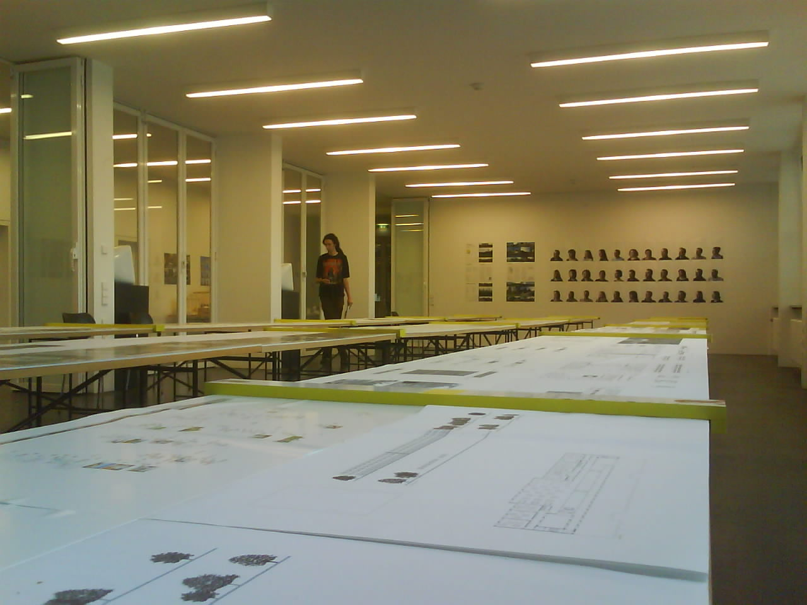

Neue Disco in Kaiserslautern: Contact Club
 Schon gehört? Im Oktober 2007 macht ein neuer Club in KL auf: Contact Club | Disco | Club Freitags Electonic Fusion, Samstags in Da Club
Schon gehört? Im Oktober 2007 macht ein neuer Club in KL auf: Contact Club | Disco | Club Freitags Electonic Fusion, Samstags in Da Club
Hat jemand ‘ne Ahnung wo? Ich bin gespannt!
http://www.contact-kl.de
Schon gehört? Im Oktober 2007 macht ein neuer Club in KL auf: Contact Club | Disco | Club Freitags Electonic Fusion, Samstags in Da Club
Hat jemand ‘ne Ahnung wo? Ich bin gespannt!
http://www.contact-kl.de
Gerade beim SWR gelesen und gelacht:
Die Technische Universität Kaiserslautern verzeichnet im Fachbereich Maschinenbau doppelt so viele Studienbewerber wie im vergangenen Jahr. Auch in anderen Ingenieurstudiengängen sind die Bewerberzahlen angestiegen. Uni-Präsident Helmut Schmidt nannte als Gründe für diesen Ansturm den hohen Bedarf an Ingenieurstudenten in der Wirtschaft und die gute Arbeit an der TU. Schmidt rechnet mit Platz- und Personalproblemen, wenn sich nur die Hälfte der Bewerber wirklich für ein Studium einschreibe. Quelle: SWR
Haha! Hauptgrund sind doch eher die fehlenden Studiengebühren in RLP, oder? Sieht es an anderen Unis mit Studgeb. ähnlich aus?
Da wir gerade so in Video Stimmung sind, hier noch ein paar coole Vids aus KL:
Parcourlauf durch die Stadt:
Remixing the invisible im KliK:
Skaten bei schönem Soundtrack & Herbstsonne:
Roböxotica Live übertragung:
für noch mehr einfach mal bei youtube suchen nach:
kaiserslautern -fußball -betzenberg -fck -soccer -fanfest -wm -cup
So hier auch noch das versprochene Video der Sommerloch Verlosung!
 Große Raus-aus-Sommerloch Verlosung:
Große Raus-aus-Sommerloch Verlosung:
Ich verlose 4 Karten für das Sommernachtskonzert von Serenada Espanola – Spanische Musik für Violoncello und Gitarre am Sonntag, den 26. August 2007 in Kaiserslautern. (Eine Karte kostet 15EUR!!)
Mitmachen kann jeder und ist super easy:
Einfach hier im Kommentar schreiben auf was du in KL nicht verzichten kannst!
Ist es die nähe zum Wald, das lecker Eis bei San Marco, das Union Kino, oder doch der Betze? Sag es!
Von allen Kommentaren lose ich am 19. August im Benderhof die Gewinner! Karten gehen an vier zufällige Beiträge. Leg los & viel Spaß!
Hey, dieses Wochenende muss ich passen, konnte noch kein cooles Event finden! Ist echt nix los?
Mein Tipp: Freunde, Grill + Bier packen und auf ins Grüne: Stadtpark, Volkspark oder Pfälzer Wald sind ideal!
Wer noch Wasser zum Schwimmen braucht, dem kann ich den Eiswoog (hinter Enkenbach-Alsenborn) empfehlen. Schöner kleiner See, freier Eintritt, direkt im Wald!
P.S: Ach ja, in Saarbrücken ist Nauwieser Viertel Fest
Im Gebäude 1 der TU Kaiserslautern kann man ab sofort die Abschluß Diplomarbeiten bestaunen. Sehr schön inzeniert werden hier die Absolventen mit ihrem Projekt präsentiert.
Eine sehr gute Idee – daran sollten sich auch mal andere Fachbereiche ein Beispiel nehmen!
Wenn die Sonne lacht, der Himmel strahlend blau und endlich Feierabend oder sogar Wochenende ist – wer will da schon zuhause herumsitzen? Dann heißt es mit den Freunden ab in den Biergarten…Was gibt es Schöneres, als bei einem kühlen Bierchen sich zu entspannen? Aber wohin in Kaiserslautern?
Um das zu beantworten hier die Liste meine Favorites:
Bremerhof:
+ sehr schön im Wald gelegen
– weiter weg
– Turis
Benderhof:
+ Studentenkneipe
– klein, kein Essen
Brauhaus am Markt:
+ super zentral
+ eigenes Bier
– mitten in der Fussgängerzone, wenig Grün
Sonst fällt mir noch ein:
Chez Maurice, Gasthaus Quack, Alte Münz,…
Wer hat noch weitere Tipps?
Ich habe gerade ein interressantes Interview von anderslautern mit der Beatclub crew gefunden. Hier lesen!
Vor ungefähr zwei Wochen hat in Kaiserslautern das afrikanische Restaurant Kilimandjaro – Afrikanisches Restaurant mit tanzender Köchin eröffnet. Am Sonntag war ich endlich dort hab’s getestet:
In netter Atmosphäre (auch Außenterrasse) wird eine gute Auswahl verschiedener afrikanischer Gerichte geboten. Viele davon auch vegetarisch! Preise sind sehr Fair, von 3 EUR bis ca. 15 EUR. Das Essen dauert zwar etwas war dafür sehr frisch & lecker. Unter der Woche gibts Frühstücksbuffet von 09:00 bis 11:30 Uhr, Brunch am Sonntag ab 10:00 Uhr. Tipp: Ab 5 Personen und Voranmeldung gibt’s auch Menus – klingt sehr gut!
Fazit: in KL muss es nicht immer Pfälzer, Italienische oder Asiatische Küche sein. Das Restaurant Kilimandjaro bietet eine sehr gute Alternative mit guter Auswahl zur fairen Preisen – unbedingt testen!
Schuberstr. 29, nähe Lutrina Parkhaus
Öffnungszeiten: Mo-Fr: 09:00-14:00 Uhr sowie 17:00-23:00 Uhr; So: 10:00-22:00 Uhr
P.S: tanzen hab ich aber die Köchin noch nicht gesehen

{kind=link}